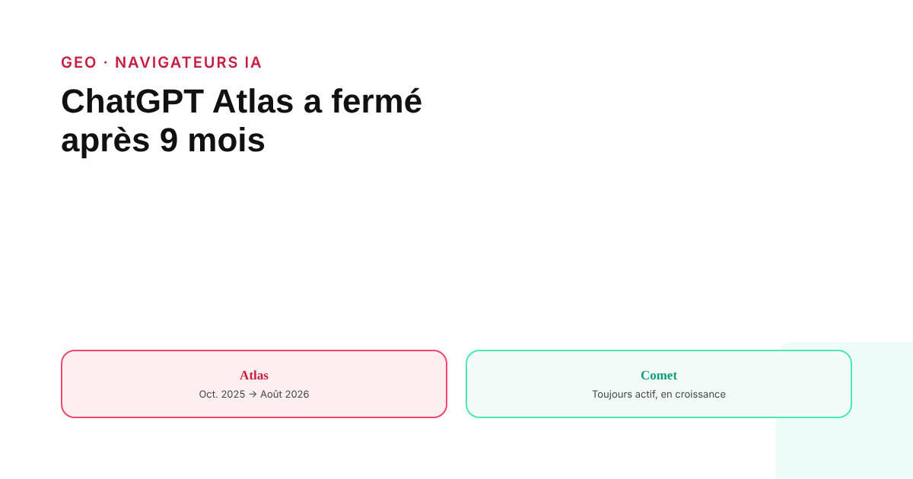
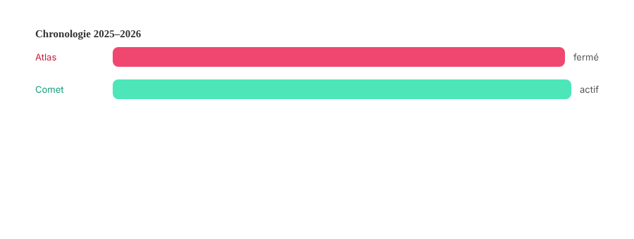

ChatGPT Atlas a fermé après 9 mois : ce que ça dit des navigateurs IA agentiques
Lancé en grande pompe en octobre 2025, le navigateur Atlas d'OpenAI a fermé moins d'un an plus tard. Perplexity Comet, de son côté, continue sa croissance. Entre les deux, un signal utile sur la maturité réelle de ces outils — et un vrai point d'attention pour votre analytics.

OpenAI a lancé Atlas, son navigateur intégrant ChatGPT, le 21 octobre 2025 — d'abord sur macOS, avec des versions Windows, iOS et Android promises mais jamais réellement généralisées. Le 9 juillet 2026, l'entreprise a annoncé sa fermeture, effective le 9 août 2026 : les fonctions de navigation et d'agent ont été repliées dans l'application ChatGPT classique et dans une extension Chrome. Moins de dix mois se sont écoulés entre le lancement et l'arrêt. C'est un point de repère utile avant de tirer des conclusions hâtives sur l'avenir des navigateurs IA agentiques.
Deux trajectoires opposées, pas une tendance unique
Pendant que l'un fermait, l'autre grandissait. Comet, le navigateur de Perplexity, est passé d'un accès par invitation à une ouverture mondiale et gratuite en octobre 2025, avec des versions Windows et Mac dès juillet 2025, Android en novembre 2025, puis iPhone au printemps 2026. Il reste actif et continue de s'étendre fin 2026. Traiter « les navigateurs IA agentiques » comme un bloc homogène masque une réalité plus nuancée : la fermeture d'Atlas est une défaillance de produit ou de stratégie spécifique à OpenAI, pas une preuve que le concept lui-même a échoué.
Ce que ces navigateurs font vraiment — et où s'arrête la confirmation officielle
Les deux produits ajoutent un « mode agent » qui va au-delà du chatbot classique : cliquer, saisir des champs, naviguer de façon autonome pour accomplir une tâche. Atlas, de son côté, confirmait pouvoir ajouter des articles au panier et avancer vers le paiement, avec une pause imposée pour validation manuelle sur les sites sensibles ou financiers — aucun cas confirmé de paiement entièrement automatisé sans intervention humaine. Comet revendique une logique similaire pour les achats, avec des points de contrôle de confirmation avant tout envoi ou paiement. Un litige opposant Amazon à Perplexity, déposé en novembre 2025, allègue que Comet aurait dissimulé des achats automatisés en les faisant passer pour des sessions humaines : ce point reste un différend juridique en cours, pas un fait établi.

Aucun chiffre officiel d'adoption, ni d'un côté ni de l'autre
Ni OpenAI ni Perplexity n'ont publié de chiffres officiels d'utilisateurs actifs spécifiques à leur navigateur. Les estimations qui circulent sur Comet (plusieurs millions d'utilisateurs mensuels, en forte croissance au premier trimestre 2026) viennent d'outils de mesure tiers, pas de l'éditeur lui-même : à traiter comme des ordres de grandeur non confirmés. Le seul chiffre que Perplexity ait communiqué directement concerne l'ensemble de ses produits combinés, pas Comet isolément.
Le vrai point d'attention : l'attribution dans votre analytics
Au-delà du débat sur l'adoption, un point concret et documenté concerne la mesure : Atlas avait tendance à supprimer les données de référent, ce qui faisait remonter le trafic généré par ses visites comme « Direct / (not set) » dans GA4 plutôt que comme un canal identifiable — un problème désormais sans objet avec sa fermeture. Comet, en revanche, transmet généralement une donnée de référent reconnaissable (perplexity.ai), ce qui permet de l'identifier comme trafic de référencement si on configure un regroupement de canaux dédié dans GA4. Les deux navigateurs peuvent par ailleurs classer à tort des visiteurs récurrents comme de nouveaux utilisateurs. C'est le seul effet mesurable aujourd'hui, et il justifie une vérification de configuration analytics, bien avant toute action tactique de visibilité spécifique à ces navigateurs.
Ce que ça signifie en pratique maintenant
Chrome reste très largement dominant en part de marché des navigateurs, et aucune mesure indépendante fiable n'établit une part de marché significative pour les navigateurs agentiques pris ensemble. La fermeture d'Atlas après neuf mois illustre à quel point ce segment reste instable : ce n'est pas une raison d'ignorer le sujet, mais une raison de ne pas sur-investir dans une adaptation tactique spécifique avant d'avoir une base plus stable sur laquelle s'appuyer. Vérifier l'attribution GA4 du trafic Comet reste l'action concrète la plus justifiée aujourd'hui ; le reste relève de la veille, pas de l'urgence.
FAQ
ChatGPT Atlas existe-t-il encore fin 2026 ?
Non. OpenAI a annoncé la fermeture d'Atlas le 9 juillet 2026, effective le 9 août 2026, moins d'un an après son lancement en octobre 2025. Les fonctions de navigation et d'agent ont été intégrées à l'application ChatGPT classique et à une extension Chrome.
Un navigateur IA agentique peut-il faire un achat sans validation humaine ?
Non, pas selon les garanties communiquées par les éditeurs eux-mêmes. OpenAI et Perplexity indiquent tous deux intégrer une étape de confirmation manuelle avant tout paiement ou action sensible. Un litige opposant Amazon à Perplexity autour de Comet, portant sur la nature exacte de ces achats automatisés, reste en cours et n'est pas tranché.
Les navigateurs IA agentiques représentent-ils déjà une part significative du trafic web ?
Non, pas encore. Chrome reste très largement dominant en part de marché des navigateurs. Les navigateurs agentiques restent un signal directionnel à surveiller plutôt qu'une source de trafic avec un poids mesurable aujourd'hui, à l'exception d'un point d'attention réel sur l'attribution analytics du trafic en provenance de Perplexity Comet.
Envie de vérifier comment votre analytics traite le trafic IA entrant ?
Pour aller plus loin, voir la page GEO, et l'article Comment auditer sa visibilité dans ChatGPT et Perplexity.
Pour continuer sur ce sujet.